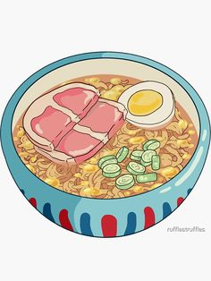

Ponyo's Ramen

Description
Quick and easy ramen recipe made in Gake no Ue no Ponyo (Ponyo on the Cliff)!
Ingredients
- 1 instant ramen noodle packet any kind you want
- 1 egg, hard or soft boiled
- 1 green onion, sliced
- 1 piece ham, cut in half
- 2.5 cups water
Steps
- Prep the ingredients: Hard or soft boil the egg and cut in half, slice the green onions, and cut the ham in half.
- Boil water in a kettle or on the stove.
- Place ramen noodles in a bowl. If your ramen comes with a dry ramen seasoning packet, open and put it in now.
- Pour boiling water into the bowl. Cover the bowl and let it sit according to the ramen package instructions (3-5 minutes).
- Once cooked uncover and separate noodles using chopsticks or a fork. Mix the water, noodles, and seasoning packet together well.
- Top with half of the egg, sliced green onion, and both pieces of cut ham.
Enjoy immediately so the noodles don't get soggy!